건축기사 (2020-09-26 기출문제)
1과목: 건축계획
1. 기업체가 자사제품의 홍보, 판매 촉진 등을 위해 제품 및 기업에 관한 자료를 소비자들에게 직접 호소하여 제품의 우위성을 인식시키는 전시공간은?
- 쇼룸
- 런드리
- 프로시니엄
- 인포메이션
(정답률: 89%)

2. 사무소 건축의 실단위 계획 중 개실 시스템에 관한 설명으로 옳지 않은 것은?
- 공사비가 저렴하다.
- 독립성과 쾌적감이 높다.
- 방길이에 변화를 줄 수 있다.
- 방깊이에 변화를 줄 수 없다.
(정답률: 73%)
3. 주택단지계획에서 보차분리의 형태 중 평면분리에 해당하지 않는 것은?
- T자형
- 루프(loop)
- 쿨데삭(Cul-de-Sac)
- 오버브리지(overbridge)
(정답률: 81%)
4. 도서관의 출납 시스템 유형 중 이용자가 자유롭게 도서를 꺼낼 수 있으나 열람석으로 가기 전에 관원의 검열을 받는 형식은?(오류 신고가 접수된 문제입니다. 반드시 정답과 해설을 확인하시기 바랍니다.)
- 폐가식
- 반개가식
- 자유개가식
- 안전개가식
(정답률: 75%)
5. 단독주택에서 다음과 같은 실들을 각각 직상층 및 직하층에 배치할 경우 가장 바람직하지 않은 것은?
- 상층: 침실, 하층: 침실
- 상층: 부엌, 하층: 욕실
- 상층: 욕실, 하층: 침실
- 상층: 욕실, 하층: 부엌
(정답률: 80%)
6. 다음 중 백화점 매장의 기둥간격 결정 요소와 가장 거리가 먼 것은?
- 엘리베이터의 배치방법
- 진열장의 치수와 배치방법
- 지하주차장 주차방식과 주차 폭
- 층별 매장 구성과 예상 이용 인원
(정답률: 71%)
7. 학교 운영방식에 관한 설명으로 옳지 않은 것은?
- 종합교실형은 초등학교 저학년에 권장되는 방식이다.
- 교과교실형은 교실의 이용률은 높으나 순수율은 낮다.
- 달톤형은 학급과 학년을 없애고 각자의 능력에 따라 교과를 선택하는 방식이다.
- 플라툰형은 전 학급을 2분단으로 나누어 한 쪽이 일반 교실을 사용할 때, 다른 쪽은 특별교실을 사용한다.
(정답률: 80%)
8. 종합병원에서 클로즈드 시스템(closed system)의 외래진료부에 관한 설명으로 옳지 않은 것은?
- 내과는 소규모 진료실을 다수 설치하도록 한다.
- 환자의 이용이 편리하도록 1층 또는 2층 이하에 둔다.
- 중앙주사실, 회계, 약국 등은 정면출입구 근처에 설치한다.
- 전체병원에 대한 외래진료부의 면적비율은 40~45% 정도로 한다.
(정답률: 81%)
9. 공장 건축의 레이아웃(layout)에 관한 설명으로 옳지 않은 것은?
- 제품중심의 레이아웃은 대량생산에 유리하며 생산성이 높다.
- 레이아웃은 장래 공장규모의 변화에 대응한 융통성에 있어야 한다.
- 공정중심의 레이아웃은 다품종 소량생산이나 주문생산에 적합한 형식이다.
- 고정식 레이아웃은 기능이 동일하거나 유사한 공정, 기계를 접합하여 배치하는 방식이다.
(정답률: 74%)
10. 극장건축의 관련 제실에 관한 설명으로 옳지 않은 것은?
- 앤티 룸(anti room)은 출연자들이 출연 바로 직전에 기다리는 공간이다.
- 그린 룸(green room)은 출연자 대기실을 말하며 주로 무대 가까운 곳에 배치한다.
- 배경제작실의 위치는 무대에 가까울수록 편리하며, 제작 중의 소음을 고려하여 차음 설비가 요구된다.
- 의상실은 실의 크기가 1인당 최소 8m2이 필요하며, 그린 룸이 있는 경우 무대와 동일한 층에 배치하여야 한다.
(정답률: 75%)
11. 상점의 동선계획에 관한 설명으로 옳지 않은 것은?
- 고객동선은 가능한 길게 한다.
- 직원동선은 가능한 짧게 한다.
- 상품동선과 직원동선은 동일하게 처리한다.
- 고객 출입구와 상품 반입/출 출입구는 분리하는 것이 좋다.
(정답률: 83%)
12. 건축공간의 치수계획에서 “압박감을 느끼지 않을 만큼의 천장 높이 결정”은 다음 중 어디에 해당하는가?
- 물리적 스케일
- 생리적 스케일
- 심리적 스케일
- 입면적 스케일
(정답률: 88%)
13. 고대 로마 건축물 중 판테온(Pantheon)에 관한 설명으로 옳지 않은 것은?
- 로툰다 내부는 드럼과 돔 두 부분으로 구성된다.
- 직사각형의 입구 공간은 외부와 내부 사이의 전이공간으로 사용된다.
- 드럼 하부는 깊은 니치와 독립된 도리아식 기둥들로 동적인 공간을 구현한다.
- 거대한 돔을 얹은 로툰다와 대형 열주 현관이라는 2가지 주된 구성 요소로 이루어진다.
(정답률: 69%)
14. 극장의 평면형식 중 오픈 스테이지(open stage)형에 관한 설명으로 옳은 것은?
- 연기자가 남측 방향으로만 관객을 대하게 된다.
- 강연, 음악회, 독주, 연극 공연에 가장 적합한 형식이다.
- 가장 일반적인 극장의 형식으로 어떠한 배경이라도 창출이 가능하다.
- 무대와 객석이 동일공간에 있는 것으로 관객석이 무대의 대부분을 둘러싸고 있다.
(정답률: 72%)
15. 다음 설명에 알맞는 사무소 건축의 코어 유형은?
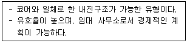
- 편심형
- 독립형
- 분리형
- 중심형
(정답률: 83%)
16. 조선시대에 田자형 주택으로 대별되는 서민주택의 지방 유형은?
- 서울지방형
- 남부지방형
- 중부지방형
- 함경도지방형
(정답률: 78%)
17. 메조넷형(Maisonette Type) 아파트에 관한 설명으로 옳지 않은 것은?
- 설비, 구조적인 해결이 유리하며 경제적이다.
- 통로가 없는 층의 평면은 프라이버시 확보에 유리하다.
- 통로가 없는 층의 평면은 화재 발생 시 대피 상 문제점이 발생할 수 있다.
- 엘리베이터 정지층 및 통로 면적의 감소로 전용면적의 극대화를 도모할 수 있다.
(정답률: 71%)
18. 고딕 성당에 관한 설명으로 옳지 않은 것은?
- 중앙집중식 배치를 지배적으로 사용하였다.
- 건축 형태에서 수직성을 강하게 강조하였다.
- 고딕 성당으로는 랭스 성당, 아미앵 성당 등이 있다.
- 수평 방향으로 통일되고 연속적인 공간을 만들었다.
(정답률: 47%)
19. 단독주택의 평면계획에 관한 설명으로 옳지 않은 것은?
- 거실은 평면계획상 통로나 홀로 사용하지 않는 것이 좋다.
- 현관의 위치는 대지의 형태, 도로와의 관계 등에 의하여 결정된다.
- 부엌은 주택의 서측이나 동측이 좋으며 남향은 피하는 것이 좋다.
- 노인침실은 일조가 충분하고 전망이 좋은 조용한 곳에 면하게 하고 식당, 욕실 등에 근접시킨다.
(정답률: 77%)
20. 다음 중 호텔의 성격상 연면적에 대한 숙박면적의 비가 가장 큰 것은?
- 리조트 호텔
- 커머셜 호텔
- 클럽 하우스
- 레지덴셜 호텔
(정답률: 81%)
2과목: 건축시공
21. 벽두께 1.0B, 벽면적 30m2 쌓기에 소요되는 벽돌의 정미량은? (단, 벽돌은 표준형을 사용한다.)
- 3900매
- 4095매
- 4470매
- 4604매
(정답률: 73%)
22. 석재의 일반적 성질에 관한 설명으로 옳지 않은 것은?
- 석재의 비중은 조암광물의 성질·비율·공극의 정도 등에 따라 달라진다.
- 석재의 강도에서 인장강도는 압축강도에 비해 매우 작다.
- 석재의 공극률이 클수록 흡수율이 크고 동결융해저항성은 떨어진다.
- 석재의 강도는 조성결정형이 클수록 크다.
(정답률: 55%)
23. Power shovel의 1시간당 추정 굴착 작업량을 다음 조건에 따라 구하면?
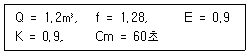
- 67.2 m3/h
- 74.7 m3/h
- 82.2 m3/h
- 89.6 m3/h
(정답률: 64%)
24. 도장작업 시 주의사항으로 옳지 않은 것은?
- 도료의 적부를 검토하여 양질의 도료를 선택한다.
- 도료량을 표준량보다 두껍게 바르는 것이 좋다.
- 저온 다습 시에는 작업을 피한다.
- 피막은 각층마다 충분히 건조 경화한 후 다음 층을 바른다.
(정답률: 82%)
25. 콘크리트의 내화, 내열성에 관한 설명으로 옳지 않는 것은?
- 콘크리트의 내화, 내열성은 사용한 골재의 품질에 크게 영향을 받는다.
- 콘크리트는 내화성이 우수해서 600℃ 정도의 화열을 장시간 받아도 압축강도는 거의 저하하지 않는다.
- 철근콘크리트 부재의 내화성을 높이기 위해서는 철근의 피복두께를 충분히 하면 좋다.
- 화재를 입은 콘크리트의 탄산화 속도는 그렇지 않은 것에 비하여 크다.
(정답률: 78%)
26. 아스팔트 방수공사에서 아스팔트 프라이머를 사용하는 가장 중요한 이유는?
- 콘크리트 면의 습기 제거
- 방수층의 습기 침입 방지
- 콘크리트면과 아스팔트 방수층의 접착
- 콘크리트 밑바닥의 균열방지
(정답률: 74%)
27. 콘크리트 배합에 직접적으로 영향을 주는 요소가 아닌 것은?
- 단위수량
- 물-결합재 비
- 철근의 품질
- 골재의 입도
(정답률: 82%)
28. 철근, 볼트 등 건축용 강재의 재료시험 항목에서 일반적으로 제외되는 항목은?
- 압축강도시험
- 인장강도시험
- 굽힘시험
- 연신율시험
(정답률: 63%)
29. 발주자에 의한 현장관리로 볼 수 없는 것은?
- 착공신고
- 하도급계약
- 현장회의 운영
- 클레임 관리
(정답률: 68%)
30. 어스앵커 공법에 관한 설명으로 옳지 않은 것은?
- 버팀대가 없어 굴착공간을 넓게 활용할 수 있다.
- 인접한 구조물의 기초나 매설물이 있는 경우 효과가 크다.
- 대형기계의 반입이 용이하다.
- 시공 후 검사가 어렵다.
(정답률: 70%)
31. 단순조적 블록쌓기에 관한 설명으로 옳지 않은 것은?
- 살두께가 큰 편을 아래로 하여 쌓는다.
- 특별한 지정이 없으면 줄눈은 10mm가 되게 한다.
- 하루의 쌓기 높이는 1.5m 이내를 표준으로 한다.
- 줄눈 모르타르는 쌓은 후 줄눈누르기 및 줄눈파기를 한다.
(정답률: 69%)
32. 다음 중 QC활동의 도구가 아닌 것은?
- 특성요인도
- 파레토그램
- 층별
- 기능계통도
(정답률: 69%)
33. 철근의 가스압접에 관한 설명으로 옳지 않은 것은?
- 이음공법 중 접합강도가 극히 크고 성분원소의 조직변화가 적다.
- 압접공은 작업 대상과 압접 장치에 관하여 충분한 경험과 지식을 가진 자로 책임기술자 승인을 받아야 한다.
- 가스압접할 부분은 직각으로 자르고 절단면을 깨끗하게 한다.
- 접합되는 철근의 항복점 또는 강도가 다른 경우에 주로 사용한다.
(정답률: 63%)
34. 용제형(Solvent)고무계 도막방수 공법에 관한 설명으로 옳지 않은 것은?
- 용제는 인화성이 강하므로 부근의 화기는 엄금한다.
- 한층의 시공이 완료되면 1.5~2시간 경과 후 다음층의 작업을 시작 하여야 한다.
- 완성된 도막은 외상(外傷)에 매우 강하다.
- 합성고무를 휘발성 용제에 녹인 일종의 고무도료를 칠하여 두께 0.5~0.8mm의 방수피막을 형성하는 것이다.
(정답률: 62%)
35. 공사계약제도 중 공사관리방식(CM)의 단계별 업무내용 중 비용의 분석 및 VE기법의 도입시 가장 효과적인 단계는?
- Pre-Design 단계
- Design 단계
- Pre-Construction 단계
- Construction 단계
(정답률: 71%)
36. 커튼월(Curtain Wall)의 외관 형태별 분류에 해당하지 않는 방식은?
- Unit 방식
- Mullion 방식
- Spandrel 방식
- Sheath 방식
(정답률: 55%)
37. 고층건축물 공사의 반복작업에서 각 작업조의 생산성을 기울기로 하는 직선으로 각 반복작업의 진행을 표시하여 전체공사를 도식화하는 기법은?
- CPM
- PERT
- PDM
- LOB
(정답률: 67%)
38. 수밀콘크리트의 시공에 관한 설명으로 옳지 않은 것은?
- 수밀콘크리트는 누수 원인이 되는 건조수축균열의 발생이 없도록 시공하여야 하며, 0.1mm 이상의 균열 발생이 예상되는 경우 누수를 방지하기 위한 방수를 검토하여야 한다.
- 거푸집의 긴결재로 사용한 볼트, 강봉, 세퍼레이터 등의 아래쪽에는 블리딩 수가 고여서 콘크리트가 경화한 후 물의 통로를 만들어 누수를 일으킬 수 있으므로 누수에 대하여 나쁜 영향이 없는 재질의 것을 사용하여야 한다.
- 소요 품질을 갖는 수밀콘크리트를 얻기 위해서는 전체 구조부가 시공이음 없이 설계되어야 한다.
- 수밀성의 향상을 위한 방수제를 사용하고자 할 때에는 방수제의 사용 방법에 따라 배처플랜트에서 충분히 혼합하여 현장으로 반입시키는 것을 원칙으로 한다.
(정답률: 56%)
39. 철골공사 접합 중 용접에 관한 주의사항으로 옳지 않은 것은?
- 현장용접을 하는 부재는 그 용접부위에 얇은 에나멜 페인트를 칠하되, 이밖에 다른 칠을 해서는 안 된다.
- 용접봉의 교환 또는 다층용접일 때에는 먼저 슬래그를 제거하고 청소한 후 용접한다.
- 용접할 소재는 용접에 의한 수축변형이 생기고, 또 마무리 작업도 고려해야하므로 치수에 여분을 두어야 한다.
- 용접이 완료되면 슬래그 및 스패터를 제거하고 청소한다.
(정답률: 69%)
40. 기성 말뚝 세우기 공사 시 말뚝의 연직도나 경사도는 얼마 이내로 하여야 하는가?(2022년 02월 확인한 규정 적용됨)
- 1/50
- 1/75
- 1/80
- 1/100
(정답률: 44%)
3과목: 건축구조
41. 강도설계법에 따른 철근콘크리트 단근보에서 fck = 27 MPa, fy = 400 MPa, 균형철근비(ρb) = 0.0293 일 때 최대철근비는?
- 0.0258
- 0.0220
- 0.0209
- 0.0188
(정답률: 52%)
42. 그림과 같은 구조물에서 C점에 발생되는 모멘트는?
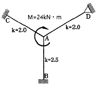
- 4.0 kN·m
- 3.5 kN·m
- 3.0 kN·m
- 2.5 kN·m
(정답률: 57%)
43. 온통기초에 관한 설명으로 옳지 않은 것은?
- 연약지반에 주로 사용된다.
- 독립기초에 비하여 구조해석 및 설계가 매우 단순하다.
- 부동침하에 대하여 유리하다.
- 지하수가 높은 지반에서도 유효한 기초방식이다.
(정답률: 59%)
44. 1방향 철근콘크리트 슬래브에서 철근의 설계기준항복강도가 500MPa인 경우 콘크리트 전체 단면적에 대한 수축·온도 철근비는 최소 얼마 이상이어야 하는가? (단, KDS기준, 이형철근 사용)
- 0.0015
- 0.0016
- 0.0018
- 0.0020
(정답률: 43%)
45. 길이 8m의 단순보가 100kN/m의 등분포 활하중을 받을 때 위험단면에서 전단철근이 부담해야하는 공칭전단력(Vs)는 얼마인가? (단, 구조물 자중에 의한 wD = 6.72 kN/m, fck = 24 MPa, fy = 300 MPa, λ = 1, bw = 400 mm, d = 600 mm, h = 700 mm)
- 424.43 kN
- 530.53 kN
- 565.91 kN
- 571.40 kN
(정답률: 26%)
46. 다음 그림과 같은 보에서 A점의 수직반력을 구하면?
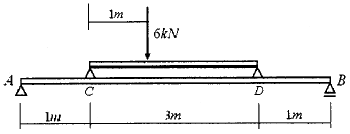
- 2.4 kN
- 3.6 kN
- 4.8 kN
- 6.0 kN
(정답률: 58%)
47. 단일 압축재에서 세장비를 구할 때 필요하지 않은 것은?
- 유효좌굴길이
- 단면적
- 탄성계수
- 단면2차모멘트
(정답률: 61%)
48. 모살치수 8mm, 용접길이 500mm인 양면모살용접 전체의 유효 단면적은 약 얼마인가?
- 2100 mm2
- 3221 mm2
- 4300 mm2
- 5421 mm2
(정답률: 55%)
49. 압축이형철근(D19)의 기본정착길이를 구하면? (단, 보통콘크리트 사용, D19의 단면적 : 287mm2, fck = 21MPa, fy = 400MPa)
- 674mm
- 570mm
- 482mm
- 415mm
(정답률: 49%)
50. 기초 설계 시 인접대지를 고려하여 편심기초를 만들고자 한다. 이 때 편심기초의 지내력이 균등해지도록 하기 위한 가장 타당한 방법은?
- 지중보를 설치한다.
- 기초 면적을 넓힌다.
- 기둥의 단면적을 크게 한다.
- 기초 두께를 두껍게 한다.
(정답률: 72%)
51. 바람의 난류로 인해 발생되는 구조물의 동적 거동 성분을 나타내는 것으로 평균변위에 대한 최대변위의 비를 통계적인 값으로 나타낸 계수는?
- 활하중저감계수
- 중요도계수
- 가스트 영향계수
- 지역계수
(정답률: 67%)
52. 독립기초에 N=20kN, M=10kN⋅m가 작용할 때 접지압이 압축력만 발생하도록 하기 위한 기초저면의 최소길이는?
- 2m
- 3m
- 4m
- 5m
(정답률: 39%)
53. 다음 그림과 같은 내민보에서 휨모멘트가 0이 되는 두 개의 반곡점 위치를 구하면? (단, 반곡점 위치는 A점으로부터의 거리임)
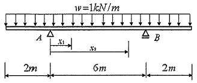
- x1 = 0.765m, x2 = 5.235m
- x1 = 0.785m, x2 = 5.215m
- x1 = 0.8⑤m, x2 = 5.195m
- x1 = 0.825m, x2 = 5.175m
(정답률: 42%)
54. 그림과 같은 철근 콘크리트보의 균열모멘트(Mcr) 값은? (단, 보통중량 콘크리트 사용, fck = 24MPa, fy = 400MPa)
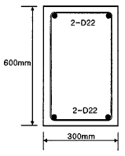
- 21.5 kN⋅m
- 33.6 kN⋅m
- 42.8 kN⋅m
- 55.6 kN⋅m
(정답률: 51%)
55. 강구조에서 용접선 단부에 붙인 보조판으로 아크의 시작이나 종단부의 크레이터 등의 결함을 방지하기 위해 붙이는 판은?
- 엔드탭
- 스티프너
- 윙플레이트
- 커버플레이트
(정답률: 73%)
56. 강구조의 소성설계와 관계없는 항목은?
- 소성힌지
- 안전율
- 붕괴기구
- 하중계수
(정답률: 55%)
57. 다음 캔틸레버보의 자유단의 처짐각은? (단, 탄성계수 E, 단면 2차모멘트 I)
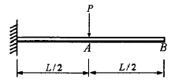
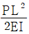
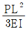
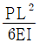
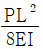
(정답률: 63%)
58. 그림과 같은 구조물의 부정정 차수는?
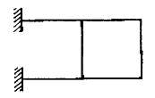
- 3차 부정정
- 4차 부정정
- 5차 부정정
- 6차 부정정
(정답률: 67%)
59. 다음 그림은 각 구간에서 직선적으로 변하하는 단순보의 모멘트도이다. C점과 D점에 동일한 힘 P1이 작용하고 보의 중앙점 E에 P2가 작용할 때 P1과 P2의 절대값은?
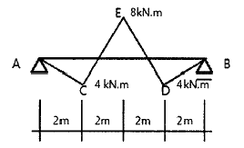
- P1=4kN, P2=6kN
- P1=4kN, P2=8kN
- P1=8kN, P2=10kN
- P1=8kN, P2=12kN
(정답률: 50%)
60. 한계상태설계법에 따라 강구조물을 설계할 때 고려되는 강도한계상태가 아닌 것은?
- 기둥의 좌굴
- 접합부 파괴
- 바닥재의 진동
- 피로 파괴
(정답률: 70%)
4과목: 건축설비
61. 다음 중 겨울철 실내 유리창 표면에 발생하기 쉬운 결로의 방지 방법과 가장 거리가 먼 것은?
- 실내공기의 움직임을 억제한다.
- 실내에서 발생하는 수증기를 억제한다.
- 이중유리로 하여 유리창의 단열성능을 높인다.
- 난방기기를 이용하여 유리창 표면온도를 높인다.
(정답률: 59%)
62. 엘리베이터의 안전장치 중에서 카가 최상층이나 최하층에서 정상 운행위치를 벗어나 그 이상으로 운행하는 것을 방지하는 것은?
- 완충기(buffer)
- 조속기(governor)
- 리미트 스위치(limit switch)
- 카운터 웨이트(counter weight)
(정답률: 78%)
63. 도시가스 설비에서 도시가스 압력을 사용처에 맞게 낮추는 감압 기능을 갖는 기기는?
- 기화기
- 정압기
- 압송기
- 가스홀더
(정답률: 74%)
64. 다음의 공기조화방식 중 전수방식에 속하는 것은?
- 단일 덕트 방식
- 2중 덕트 방식
- 멀티죤 유니트 방식
- 팬 코일 유니트 방식
(정답률: 72%)
65. 몰드 변압기에 관한 설명으로 옳지 않은 것은?
- 내진성이 우수하다.
- 내습성이 우수하다.
- 반입, 반출이 용이하다.
- 옥외 설치 및 대용량 제작이 용이하다.
(정답률: 54%)
66. 간선의 배선 방식 중 평행식에 관한 설명으로 옳은 것은?
- 설비비가 가장 저렴하다.
- 배선자재의 소요가 가장 적다.
- 사고의 영향을 최소화할 수 있다.
- 전압이 안정되나 부하의 증가에 적응할 수 없다.
(정답률: 66%)
67. 다음 설명에 알맞은 유체역학의 기본 원리는?
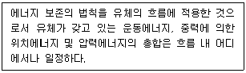
- 사이펀 작용
- 파스칼의 원리
- 뉴턴의 점성법칙
- 베르누이의 정리
(정답률: 75%)
68. 전기설비용 시설공간(실)의 계획에 관한 설명으로 옳지 않은 것은?
- 변전실은 부하의 중심에 설치한다.
- 변전실은 외부로부터 전력의 수전이 용이해야 한다.
- 중앙감시실은 일반적으로 방재센터와 겸하도록 한다.
- 발전기실은 변전실에서 최소 10m 이상 떨어진 위치에 배치한다.
(정답률: 75%)
69. 급수 및 급탕설비에 사용되는 슬리브(sleeve)에 관한 설명으로 옳은 것은?
- 사이폰 작용에 의한 트랩의 봉수 파괴 방지를 위해 사용한다.
- 스케일 부착 및 이물질 투입에 의한 관 폐쇄를 방지하기 위해 사용한다.
- 가열장치 내의 압력이 설정압력을 넘는 경우에 압력을 도피시키기 위해 사용한다.
- 배관 시 차후의 교체, 수리를 편리하게 하고 관의 신축에 무리가 생기지 않도록 하기 위해 사용한다.
(정답률: 58%)
70. 아파트의 각 세대에 스프링클러헤드를 30개 설치한 경우, 스프링클러설비의 수원의 저수량은 최소 얼마 이상이 되도록 하여야 하는가? (단, 폐쇄형 스프링클러헤드를 사용한 경우)(문제 오류로 가답안 발표시 4번으로 발표되었지만 확정답안 발표시 모두 정답처리 되었습니다. 여기서는 가답안인 4번을 누르면 정답 처리 됩니다.)
- 12 m3
- 24 m3
- 36 m3
- 48 m3
(정답률: 69%)
71. 평균 BOD 150ppm인 가정오수 1000m3/d가 유입되는 오수정화조의 1일 유입 BOD량은?
- 150 kg/d
- 300 kg/d
- 45000 kg/d
- 150000 kg/d
(정답률: 52%)
72. 습공기를 가열할 경우 감소하는 상태값은?
- 엔탈피
- 비체적
- 상대습도
- 건구온도
(정답률: 64%)
73. 냉각탑에 관한 설명으로 옳은 것은?
- 고압의 액체냉매를 증발시켜 냉동효과를 얻게 하는 설비이다.
- 증발기에서 나온 수증기를 냉각시켜 물이 되도록 하는 설비이다.
- 대기 중에서 기체냉매를 냉각시켜 액체냉매로 응축하기 위한 설비이다.
- 냉매를 응축시키는데 사용된 냉각수를 재사용하기 위하여 냉각시키는 설비이다.
(정답률: 73%)
74. 온수난방의 일반적인 특징에 관한 설명으로 옳지 않은 것은?
- 한랭지에서는 운전정지 중에 동결의 위험이 있다.
- 난방을 정지하여도 난방 효과가 어느 정도 지속된다.
- 증기난방에 비하여 난방부하 변동에 따른 온도조절이 용이하다.
- 증기난방에 비하여 소요방열면적과 배관경이 작게 되므로 설비비가 적게 든다.
(정답률: 73%)
75. 다음 중 냉방부하 계산 시 현열과 잠열 모두 고려하여야 하는 요소는?
- 덕트로부터의 취득열량
- 유리로부터의 취득열량
- 벽체로부터의 취득열량
- 극간풍에 의한 취득열량
(정답률: 57%)
76. 면적이 100m2인 어느 강당의 야간 소요 평균조도가 300lx이다. 1개당 광속이 2000lm인 형광등을 사용할 경우 소요 형광등수는? (단, 조명률은 60%이고 감광보상률은 1.5이다.)
- 25개
- 29개
- 34개
- 38개
(정답률: 50%)
77. 다음 중 방송공동수신 설비의 구성 기기에 속하지 않는 것은?
- 혼합기
- 모시계
- 컨버터
- 증폭기
(정답률: 62%)
78. 급수방식 중 고가수조방식에 관한 설명으로 옳은 것은?
- 대규모의 급수 수요에 쉽게 대응할 수 있다.
- 저수조가 없으므로 단수 시에 급수할 수 없다.
- 수도 본관의 영향을 그대로 받아 수압 변화가 심하다.
- 위생 및 유지⋅관리 측면에서 가장 바람직한 방식이다.
(정답률: 58%)
79. 습공기의 건구온도와 습구온도를 알 때 습공기 선도에서 구할 수 있는 상태값이 아닌 것은?
- 엔탈피
- 비체적
- 기류속도
- 절대습도
(정답률: 67%)
80. 변풍량 단일덕트방식에서 송풍량 조절의 기준이 되는 것은?
- 실내 청정도
- 실내 기류속도
- 실내 현열부하
- 실내 잠열부하
(정답률: 63%)
5과목: 건축법규
81. 건축물의 대지 및 도로에 관한 설명으로 틀린 것은?
- 손궤의 우려가 있는 토지에 대지를 조성하고자 할 때 옹벽의 높이가 2m 이상인 경우에는 이를 콘크리트구조로 하여야 한다.
- 면적이 100m2 이상인 대지에 건축을 하는 건축주는 대지에 조경이나 그 밖에 필요한 조치를 하여야 한다.
- 연면적의 합계가 2천m2(공장인 경우 3천m2) 이상인 건축물(축사, 작물 재배사, 그 밖에 이와 비슷한 건축물로서 건축조례로 정하는 규모의 건축물은 제외)의 대지는 너비 6m 이상의 도로에 4m 이상 접하여야 한다.
- 도로면으로부터 높이 4.5m 이하에 있는 창문은 열고 닫을 때 건축선의 수직면을 넘지 아니하는 구조로 하여야 한다.
(정답률: 63%)
82. 건축허가신청에 필요한 설계도서에 해당하지 않는 것은?
- 배치도
- 투시도
- 건축계획서
- 실내마감도
(정답률: 65%)
83. 직통계단의 설치에 관한 기준 내용 중 밑줄 친 “다음 각 호의 어느 하나에 해당하는 용도 및 규모의 건축물”의 기준 내용으로 틀린 것은?
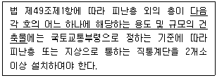
- 지하층으로서 그 층 거실의 바닥면적의 합계가 200m2 이상인 것
- 종교시설의 용도로 쓰는 층으로서 그 층에서 해당 용도로 쓰는 바닥면적의 합계가 200m2 이상인 것
- 숙박시설의 용도로 쓰는 3층 이상의 층으로서 그 층의 해당 용도로 쓰는 거실의 바닥면적의 합계가 200m2 이상인 것
- 업무시설 중 오피스텔의 용도로 쓰는 층으로서 그 층의 해당 용도로 쓰는 거실의 바닥면적의 합계가 200m2 이상인 것
(정답률: 57%)
84. 거실의 채광 및 환기에 관한 규정으로 옳은 것은?
- 교육연구시설 중 학교의 교실에는 채광 및 환기를 위한 창문등이나 설비를 설치하여야 한다.
- 채광을 위하여 거실에 설치하는 창문등의 면적은 그 거실의 바닥면적의 20분의 1 이상이어야 한다.
- 환기를 위하여 거실에 설치하는 창문등의 면적은 그 거실의 바닥면적 10분의 1 이상이어야 한다.
- 채광 및 환기를 위한 창문등의 면적에 관한 규정을 적용함에 있어서 수시로 개방할 수 있는 미닫이로 구획된 2개의 거실은 이를 2개의 거실로 본다.
(정답률: 57%)
85. 다음 중 건축면적에 산입하지 않는 대상 기준으로 틀린 것은?
- 지하주차장의 경사로
- 지표면으로부터 1.8m 이하에 있는 부분
- 건축물 지상층에 일반인이 통행할 수 있도록 설치한 보행통로
- 건축물 지상층에 차량이 통행할 수 있도록 설치한 차량통로
(정답률: 60%)
86. 시가화조정구역의 지정과 관련된 기준 내용 중 밑줄 친 “대통령령으로 정하는 기간”으로 옳은 것은?
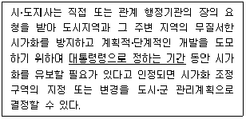
- 5년 이상 10년 이내의 기간
- 5년 이상 20년 이내의 기간
- 7년 이상 10년 이내의 기간
- 7년 이상 20년 이내의 기간
(정답률: 68%)
87. 지방건축위원회의가 심의 등을 하는 사항에 속하지 않는 것은?
- 건축선의 지정에 관한 사항
- 다중이용 건축물의 구조안전에 관한 사항
- 특수구조 건축물의 구조안전에 관한 사항
- 경관지구 내의 건축물의 건축에 관한 사항
(정답률: 44%)
88. 위락시설의 시설면적이 1000m2일 때 주차장법령에 따라 설치해야 하는 부설주차장의 설치 기준은?
- 10대
- 13대
- 15대
- 20대
(정답률: 71%)
89. 공동주택과 오피스텔의 난방설비를 개별난방 방식으로 하는 경우에 관한 기준 내용으로 틀린 것은?
- 보일러는 거실 외의 곳에 설치할 것
- 보일러실의 윗부분에는 그 면적이 0.5m2 이상인 환기창을 설치할 것
- 보일러실과 거실사이의 출입구는 그 출입구가 닫힌 경우에는 보일러가스가 거실에 들어갈 수 없는 구조로 할 것
- 보일러의 연도는 내화구조로서 개별연도로 설치할 것
(정답률: 64%)
90. 다음 중 국토의 계획 및 이용에 관한 법령상 공공시설에 속하지 않는 것은?
- 공동구
- 방풍설비
- 사방설비
- 쓰레기 처리장
(정답률: 55%)
91. 6층 이상의 거실면적의 합계가 5000m2인 경우, 다음 중 승용승강기를 가장 많이 설치해야 하는 것은? (단, 8인승 승용승강기를 설치하는 경우)
- 위락시설
- 숙박시설
- 판매시설
- 업무시설
(정답률: 53%)
92. 지하식 또는 건축물식 노외주차장의 차로에 관한 기준 내용으로 틀린 것은?
- 경사로의 노면은 거친 면으로 하여야 한다.
- 높이는 주차바닥면으로부터 2.3미터 이상으로 하여야 한다.
- 경사로의 종단경사도는 직선 부분에서는 14퍼센트를 초과하여서는 아니 된다.
- 주차대수 규모가 50대 이상인 경우의 경사로는 너비 6미터 이상인 2차로를 확보하거나 진입차로와 진출차로를 분리하여야 한다.
(정답률: 66%)
93. 다음은 건축물의 사용승인에 관한 기준 내용이다. ( )안에 알맞은 것은?
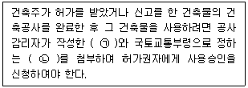
- ㉠ 설계도서, ㉡ 시방서
- ㉠ 시방서, ㉡ 설계도서
- ㉠ 감리완료보고서, ㉡ 공사완료도서
- ㉠ 공사완료도서, ㉡ 감리완료보고서
(정답률: 74%)
94. 공사감리자의 업무에 속하지 않는 것은?
- 시공계획 및 공사관리의 적정여부의 확인
- 상세 시공도면의 검토⋅확인
- 설계변경의 적정여부의 검토⋅확인
- 공정표 및 현장설계도면 작성
(정답률: 76%)
95. 제2종 일반주거지역 안에서 건축할 수 있는 건축물에 속하지 않는 것은?
- 아파트
- 노유자시설
- 종교시설
- 문화 및 집회시설 중 관람장
(정답률: 59%)
96. 주거기능을 위주로 이를 지원하는 일부 상업기능 및 업무기능을 보완하기 위하여 지정하는 주거지역의 세분은?
- 준주거지역
- 제1종 전용주거지역
- 제1종 일반주거지역
- 제2종 일반주거지역
(정답률: 73%)
97. 다음 중 피난층이 아닌 거실에 배연설비를 설치하여야 하는 대상 건축물에 속하지 않는 것은? (단, 6층 이상인 건축물의 경우)
- 판매시설
- 종교시설
- 교육연구시설 중 학교
- 운수시설
(정답률: 54%)
98. 다음 거실의 반자높이와 관련된 기준 내용 중 ( )안에 해당되지 않는 건축물의 용도는?
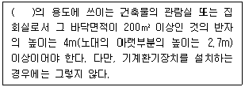
- 문화 및 집회시설 중 동⋅식물원
- 장례식장
- 위락시설 중 유흥주점
- 종교시설
(정답률: 54%)
99. 대통령령으로 정하는 용도와 규모의 건축물이 소규모 휴식시설 등의 공개 공지 또는 공개 공간을 설치하여야 하는 대상 지역에 해당되지 않는 곳은?
- 준공업지역
- 일반공업지역
- 일반주거지역
- 준주거지역
(정답률: 47%)
100. 주요구조부가 내화구조 또는 불연재료로 된 건축물로서 국토교통부령으로 정하는 기준에 따라 내화구조로 된 바닥⋅벽 및 갑종 방화문으로 구획하여야 하는 연면적 기준은?
- 400m2 초과
- 500m2 초과
- 1000m2 초과
- 1500m2 초과
(정답률: 55%)